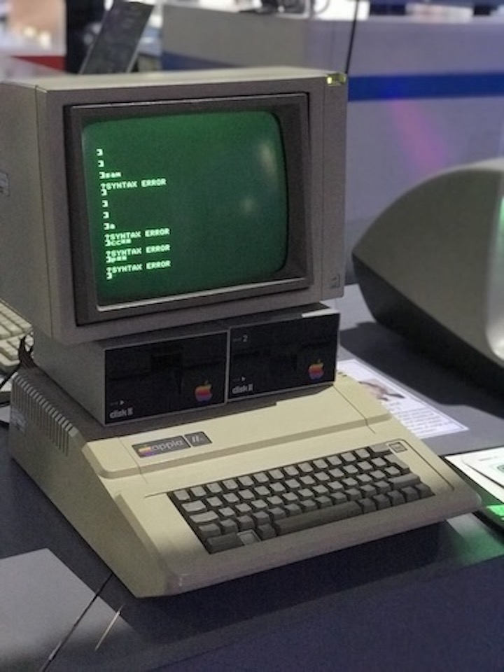
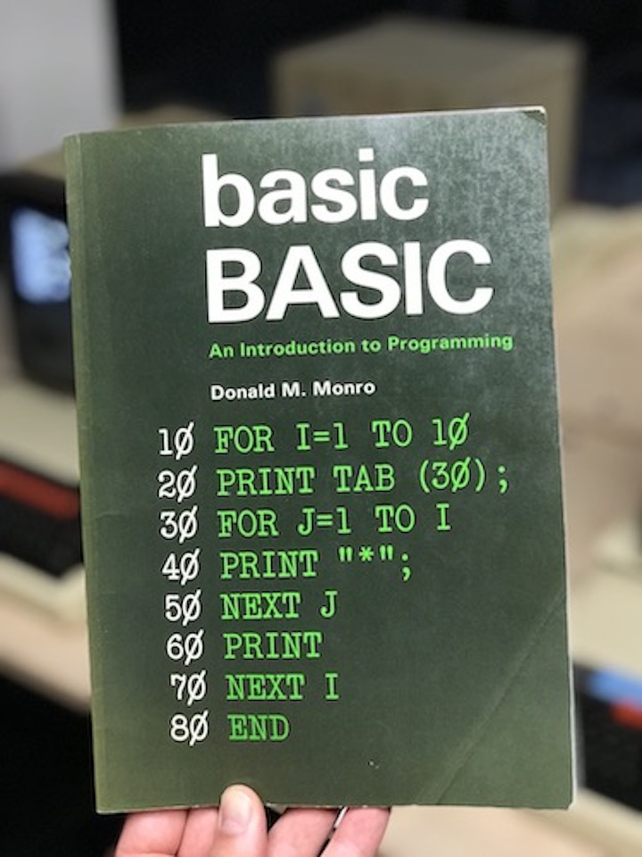
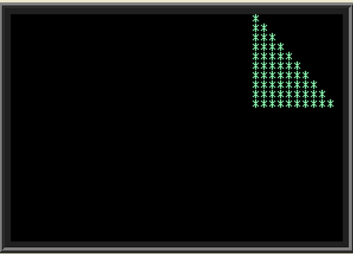

A few years ago I had the pleasure of going to Cambridge, England for work. While enjoying some free time, a bunch of colleagues and I went to the The Centre for Computing History. Aside from learning about the history of tech from knowledgeable staff, I really enjoyed playing with the old computers. Below is an Apple II. I think it’s clear I had no idea what I was doing.

Recently, I decided to search for some emulators of older systems to try older computer languages such as BASIC (Beginners’ All-purpose Symbolic Instruction Code). That’s when I found: jsbasic, a javascript BASIC emulator.

Above is a book on the BASIC programming language that was available to use with open computers at the museum. Using the jsbasic emulator let’s see what the code on the cover does!
10 FOR I=1 TO 10
20 PRINT TAB (30);
30 FOR J=1 TO I
40 PRINT "*";
50 NEXT J
60 PRINT
70 NEXT I
80 END

I think that’s pretty rad!